NICHOLAS TOBAT

I'm Nick! That's my face up there^^. My friend drew it with her eyes closed. Just a few years before that was drawn, in 2014, I moved to San Francisco and opened my eyes wide to the world of technology and design. Noticing a trend in that fair city, I thought it prudent to teach myself front-end development. Since then I've continued my self-education, taking on roles including web designer, graphic designer, and instructional designer. I am currently expanding my knowledge in the Experience Design track at the VCU Brandcenter in Richmond, VA.
SEE MY WORK